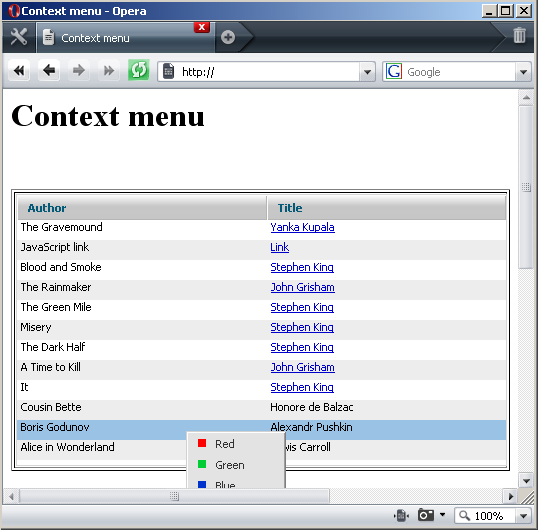

Global Parameters
Setting Menu Open Mode
The user can choose what mode to set for the top-level items of the new menu object. There are two modes available:
- win - In this mode the user should click any complex item in the top-level polygon to expand it. The item will be expanded until the user clicks any top-level open item in the menu, or any other place on the page;
- web (the default one) - In this mode items in the top-level polygon are expanded immediately, when the user hovers the mouse over any of them. When the mouse is moved outside the menu area, the open item collapses.
setOpenMode() method is used to set the menu mode:
<script> menu.setOpenMode("win"); </script>
Note: setting of the web mode from the script is not required because it's already set by default.
When the Menu is set to the web mode, there is an opportunity to set the period of time, during which the menu will be held expanded, even if the user moves the mouse outside the menu area. By default this time is set to 400 msec. To set this time period the user should use setWebModeTimeout() method:
<script> menu.setWebModeTimeout(time); </script>
Setting Visible Area
setVisibleArea() method sets the rectangle area in which sub-level polygon items will be able to appear. If this area is not set, sub-level polygon items can occupy any available visible space.
The parameters are:
- x1, x2 - int, leftmost and rightmost coordinates by x axis;
- y1, y2 - int, topmost and bottommost coordinates by y axis.
<script> menu.setVisibleArea(x1,x2,y1,y2); </script>
Usage example
When using dhtmlxGrid with Contextual menu you often meet some inconveniences. For example you need to read contextual menu of the record placed at the bottom of the grid, but the appearing of browser's scrollbars will disturb the impementation of this task. To avoid scrolling appearence set visible area and define menu position. (set grid's coordinates to acheive this).

Note: in dhtmlxMenu from 2.5 version visible area is automatically calculated and occupy just visible area in browser. If menu opens to bottom, but at bottom not enough space to open menu, it will automatically opened on top (even if scroll allows to open menu top bottom).
Hiding Open Polygons
There is the possibility to hide all open polygons in a menu from script with the help of hide() method:
<script> menu.hide(); </script>
Setting Overflow Height
By default there is no limits on the number of visible menu items in any sub-level polygon. However, the user can limit the number of visible items in a sub-level polygon using setOverflowHeight() method.
This method adds scroll-arrows to a sub-level polygon, if there are more visible menu items than it is allowed by setOverflowHeight() method. The following example shows how this method should be used as a function with any of data loading methods:
<script> menu.setOverflowHeight(4); menu.loadXML("dhtmlxMenu/codebase/dhtmlxmenu.xml"); </script>
Setting RTL mode
By default text direction in menu is set as left to right. For languages with right to left text direction the user can set RTL mode using setRTL() method:
<script> menu.setRTL(true); // false will set menu mode to LTR </script>
Setting aligning direction
The user is allowed to set left or right aligning direction in menu with the help of setAlign() method as follows:
<script> menu.setAlign("right"); </script>
Setting top text
There is a possibility to place text at the top of the menu using steTopText() method:
<script> menu.setTopText("dhtmlxMenu 2.0"); </script>
Adding/Clearing links
setHref() method allows users to add link to menu bar. In order to clear current links users should call clearHref() method:
<script> menu.setHref(itemId, href, target); menu.clearHref(itemId); </script>